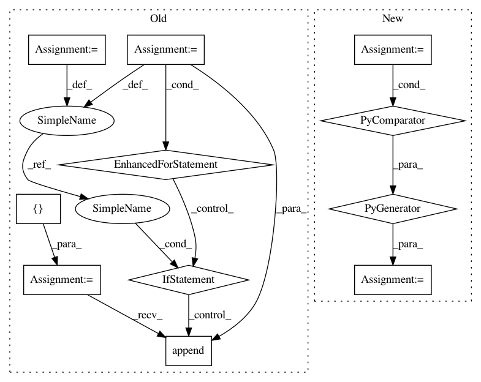

79d149dd39dc7e7d22c623c0a4a4d3ab99e61c76,conceptnet5/vectors/transforms.py,,choose_small_vocabulary,#Any#,153
Before Change
- contain more than one word
- are not in ConceptNet
small_vocabulary = []
finder = AssertionFinder()
for term in big_frame.index:
// Make sure the term is not a phrase
if term.count("_") < 1:
// Check if a term comes from ConceptNet
results = finder.lookup(term)
if results:
small_vocabulary.append(term)
return small_vocabulary
def make_big_frame(frame, lang):
After Change
- are not in ConceptNet
DATA = environ.get("CONCEPTNET_BUILD_DATA", "data")
concepts = set(line.strip() for line in open(path.join(DATA, "stats", "core_concepts.txt")))
small_vocab = [term for term in big_frame.index if term.count("_") < 1 and term in concepts]
return small_vocab
In pattern: SUPERPATTERN
Frequency: 3
Non-data size: 11
Instances
Project Name: commonsense/conceptnet5
Commit Name: 79d149dd39dc7e7d22c623c0a4a4d3ab99e61c76
Time: 2017-06-15
Author: joanna.teresa.duda@gmail.com
File Name: conceptnet5/vectors/transforms.py
Class Name:
Method Name: choose_small_vocabulary
Project Name: TheAlgorithms/Python
Commit Name: 938dd0bbb5145aa7c60127745ae0571cb20a2387
Time: 2019-12-06
Author: vargasnikolass@gmail.com
File Name: maths/prime_numbers.py
Class Name:
Method Name: primes
Project Name: commonsense/conceptnet5
Commit Name: 79d149dd39dc7e7d22c623c0a4a4d3ab99e61c76
Time: 2017-06-15
Author: joanna.teresa.duda@gmail.com
File Name: conceptnet5/vectors/transforms.py
Class Name:
Method Name: choose_small_vocabulary
Project Name: mortendahl/tf-encrypted
Commit Name: 7721c80b327aaa6f5207b4babca80e4935996e42
Time: 2019-02-27
Author: mortendahlcs@gmail.com
File Name: tf_encrypted/protocol/__init__.py
Class Name:
Method Name: get_all_funcs